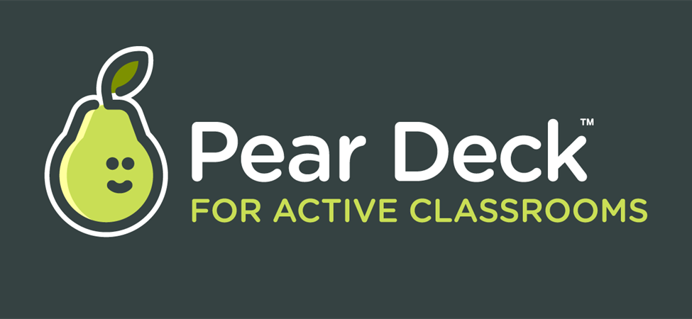
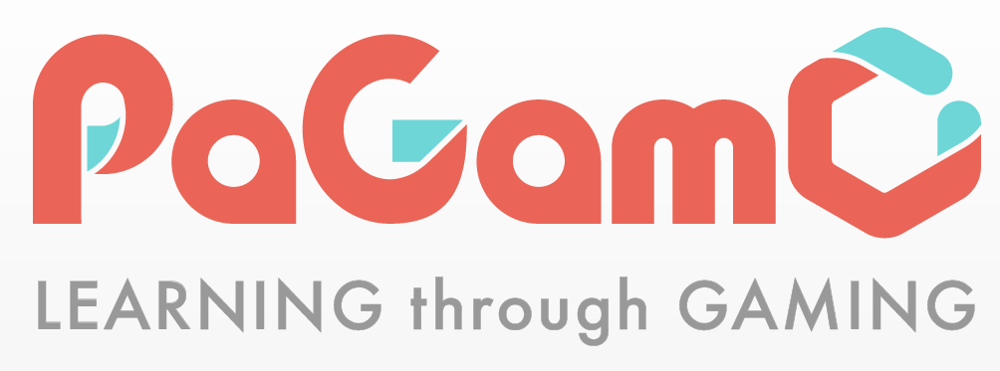
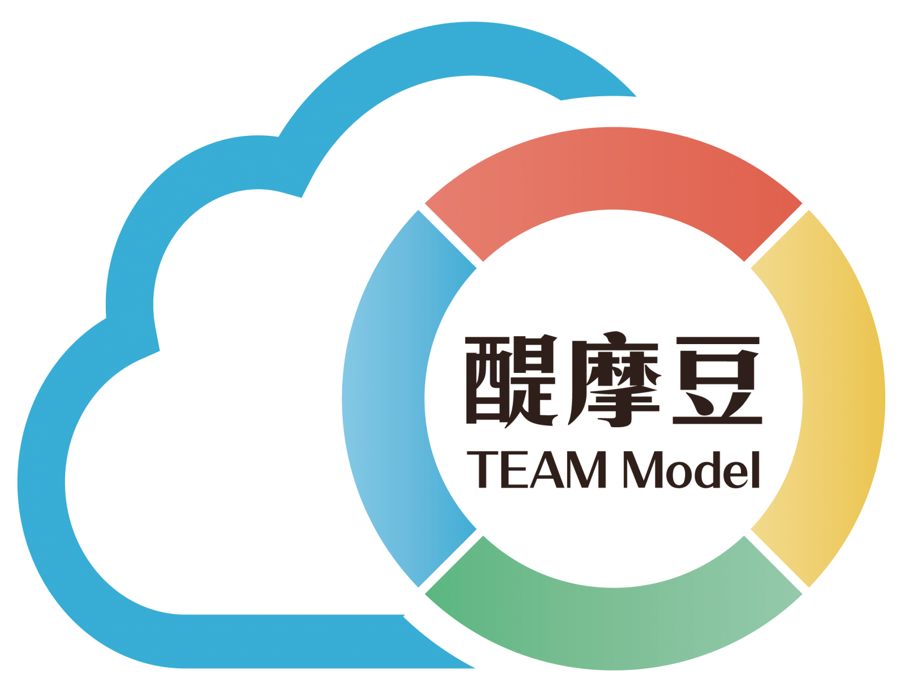
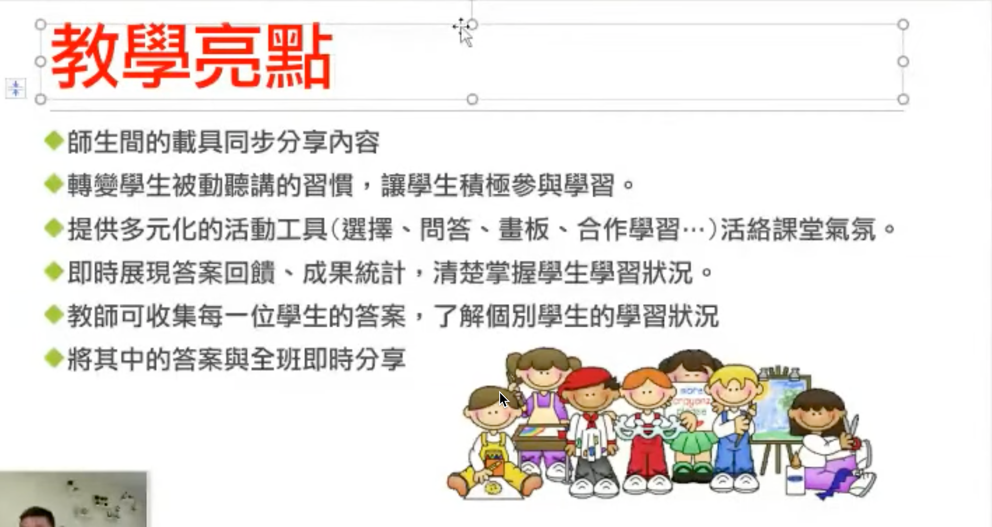
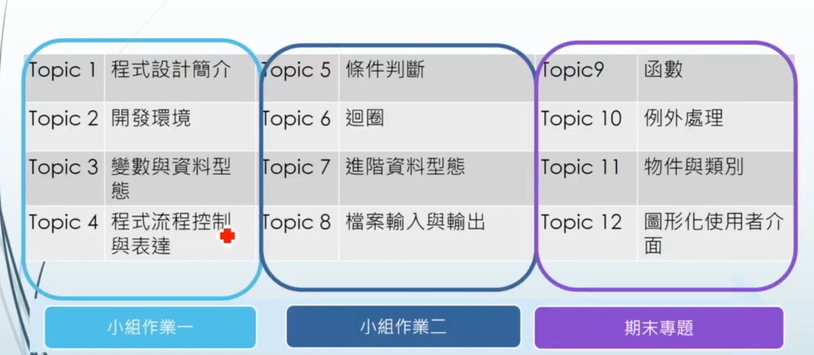
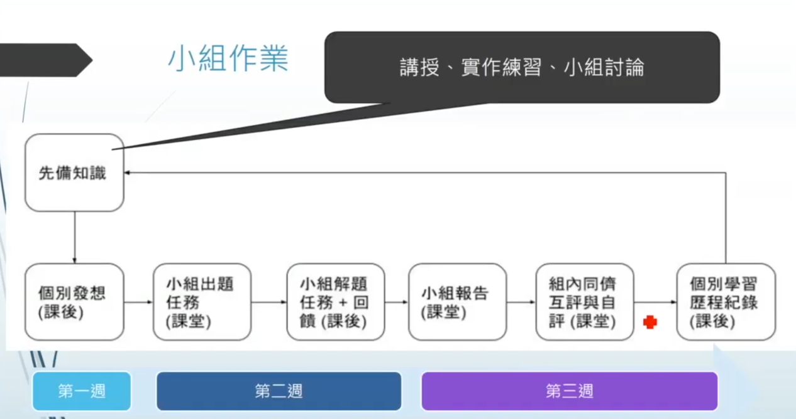
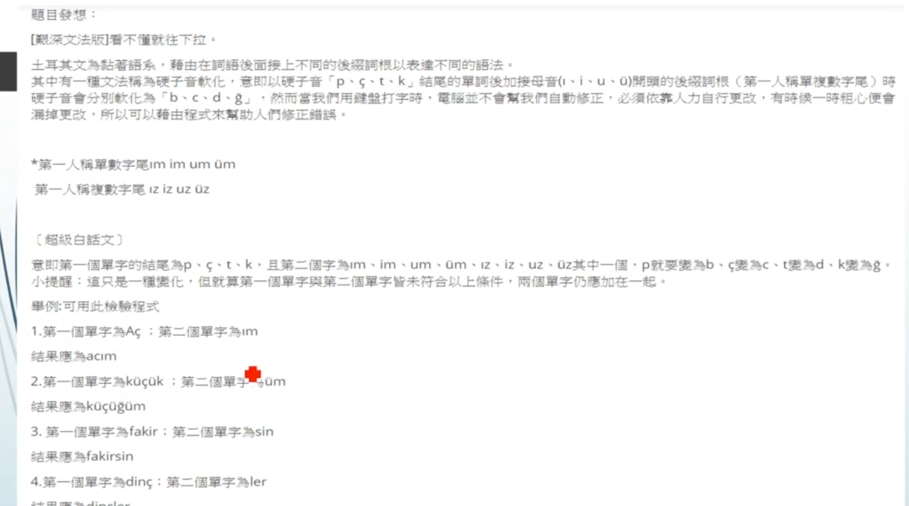
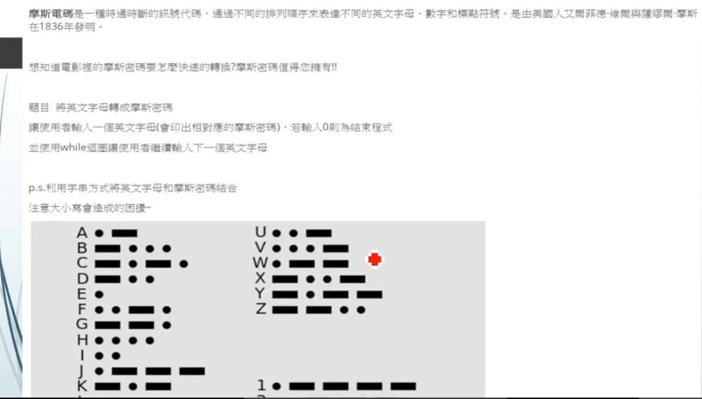

科技力應用與自主學習示例分享
Table of Contents
- 1. 研習內容
- 2. collaborative code editing
- 3. programming
- 4. 大綱
- 5. Host Platform
- 6. 高中的自主學習現況
- 7. Google Classroom: Python Introduction
- 8. Ideas
- 9. 留白
- 10. 教學決定
- 11. 混合式教學
- 12. 輔助科技類型
- 13. 工具
- 14. 逐步責任轉移的歷程(台東大學特教系曾世杰教授：閱讀)
- 15. 挑選工具的原則
- 16. 自主學習沒告訴你的事
- 17. 現階段面臨的問題
- 18. 學生的五種學習模式(花蓮林國源校長)
- 19. 大綱
- 20. 示例
- 21. chatGPT
- 22. 國中 v.s. 高中的自主學習
- 23. 我們需要什麼輔助?
- 24. 小組出題/解題
- 25. 資源
#+begin_export html
1. 研習內容
- 國中科技領域召集人課程領導增能研習
- 研習對象及人數:本市公私立國中教師，預估100人
- 研習時間:112年3月16日（星期四）8:40-9:30
- 研習地點:輔導團302會議室
Figure 1: 標題
2. collaborative code editing
- https://codeshare.io/
- https://codecollab.io/
- https://app.coderpad.io/ : 可以執行、interview
3. programming
4. 大綱
- 目前“科技輔助自主學習”的困擾不是沒有工具，而是工具太多，整合困難
- 學生: 每個工具都要一個帳號、開一個網頁或APP
- 教師: 學生作業分散在不同平台、評分麻煩
- 怎麼辦：確定一個HOME平台、找一兩個用的最順手的工具
- 因材網: 目前不是資訊科最適用的平台
- 母平台: MOODLE/Google Classroom
4.1. 各種工具的icon
Figure 2: 標題
Figure 3: 標題
Figure 4: 標題
Figure 5: 標題
Figure 6: 標題
Figure 7: 標題
Figure 8: 標題
Figure 9: 標題

Figure 10: 標題
Figure 11: 標題
Figure 12: 標題
Figure 13: 標題
Figure 14: 標題
Figure 15: 標題
Figure 16: 標題
Figure 17: 標題
Figure 18: 標題
Figure 19: 標題
Figure 20: 標題
Figure 21: 標題

Figure 22: 標題
Figure 23: 標題

Figure 24: 標題
Figure 25: 標題
Figure 26: 標題
Figure 27: 標題
Figure 28: 標題
Figure 29: 標題
Figure 30: 標題
Figure 31: 標題
5. Host Platform
5.1. Google Class
5.2. Moodle
6. 高中的自主學習現況1
- 10%的學生在做與自主學習計畫相關的工作，
- 70%的學生在準備下一堂的考科，
- 20%學生在發呆、睡覺、聊天，或是從事其他活動
6.1. 超過60%學生不喜歡自主學習
Figure 32: 標題
6.2. 74%的學生提出自主學習計畫，選擇方向與未來申請大學科系相關
Figure 33: 標題
6.3. 76%期待老師給予資源，但只有10%學生自主學習時間會找指導老師
Figure 34: 標題
6.4. 75%的學生認為自主學習時間不夠充裕
Figure 35: 標題
7. Google Classroom: Python Introduction
7.1. 課前自學
7.2. 小組討論
7.3. 小組報告
7.4. 教師導學
7.5. Google Classroom測驗
7.6. Edpuzzle[影片]
- 影片的重點2
影片是翻轉學習的重要面向，可以適時發揮單向教學的價值，但不是最重要的。影片應該用來當做翻轉學習的入口，而更深、更廣的學習可以從這裡開始。翻轉會失敗，有幾個最常見原因：
- 影片太長：影片長度的黃金比例是「年級×一～一．五分」。也就是錄給四年級生的影片，不宜超過四～六分鐘；錄給十年級生的影片應控制在十～十五分鐘，超過半小時以上，學生會覺得有負擔。
- 沒有教學生如何看影片：老師需要事先教學生「如何看影片」，這不是被動的過程，有老師甚至會設計摘要格式或工具，幫助學生明白看影片自己需完成的任務，如：觀賞－摘要－提問。
- 未讓學生承擔不預習的後果：學生沒有看影片就來到教室，老師幫忙挽救，讓學生覺得在家不預習也無妨，也很難翻轉。
根據我八年的觀察與經驗，老師必須持續翻轉至少三年，才會看到成果。理由很簡單，翻轉就像是建立文化，不會一、兩天就看到結果。第一年最累、最難，因為老師和學生都在調適；第二年老師會花很多力氣在調整教學布局與細節上；第三年，當基礎建設都穩固，很多事得以順利運作，有意義的學習情境發生頻率變高，學生和老師才會感受到翻轉學習對彼此的好處，適應主動學習的文化。
校長必須支持老師，給予時間和空間，因為翻轉需要很多投入。給老師一個月或一學期的期限，然後用標準評量成績衡量翻轉是否奏效，是不公平也不切實際的。
- 影片太長：影片長度的黃金比例是「年級×一～一．五分」。也就是錄給四年級生的影片，不宜超過四～六分鐘；錄給十年級生的影片應控制在十～十五分鐘，超過半小時以上，學生會覺得有負擔。
- 影片中的問題
7.7. Nearpod
40個學生/100MB
- All the basic features you need to get started with Nearpod.
- 100 MB Storage
- 40 student joins per lesson
Figure 36: 標題
Nearpod fill in the blank
程式填空
https://www.youtube.com/watch?v=hVOfbXl2f2c
Nearpod standard features and functionality question blue
7.8. Jamboard
- https://www.youtube.com/watch?v=twZooIP9DzQ
如何在Jamboard提供寫字練習
7.9. Padlet
- Share on Google Classroom
- 學生學習歷程檔案
7.10. KAMI
7.11. Quizlet
適合英文科教學、單字卡
https://www.youtube.com/watch?v=8SR-zHsktS8
7.12. Quizizz
可以自動滙入成績到Google classroom
https://www.youtube.com/watch?v=pEgesYvXUzI
https://www.youtube.com/watch?v=Inrpzf9mPKE
- Assign activities to Google Classroom
7.13. Socrative
專業測驗、可自動分組、有測驗進度控制
https://www.youtube.com/watch?v=wT2pMr_7eKg
7.14. SeeSaw
唯一優點：作業繳交一目瞭然
不能給分、只有comment, like
https://www.youtube.com/watch?v=sWkShUj7dUw
https://www.youtube.com/watch?v=Zl6ewhiVLro
7.15. Classkick
7.16. KAHOOT
Figure 37: 標題
- 選擇 Kahoot！ 遊戲。 點擊“播放”。
- 選擇“分配”作為播放方式。
- 自定義定時器，個性化學習，隨機化，友好暱稱等。
- 分配Kahoot！ 遊戲到谷歌課堂（作業給出成績。）
- 在報告中監控學生的進步。
7.17. PADLET
- timeline: 發展史、硬體、軟體、作業系統、小組合作
- 學生課堂筆記: Timeline/Shelf/Canvas
7.18. 示範
7.19. 自學
7.20. 程式
7.21. 共學
7.22. 總結
8. Ideas
- https://www.drsotayo.com/9-free-platforms-for-improving-student-and-participant-engagement-online/
- 在教學過程中示例如何Google語法、示範如何進行從不會到會的參考過程，例如我在教Python的一次研習中示範python的google查詢，結果有人回覆不熟就不要教….QQ
- 我們還是太習慣老師什麼都要會，老師在教學過程中會把一切都安排好，但是實際上不是這樣，我們在自主學習的過程中一定是邊查邊學
- Intel Colab例子
- Python作業例子
- 工具
- 錄影: 教師錄影、學生錄影
- 題目解說: 學生用padlet的螢幕錄影來錄製解題過程(5分鐘)
- 教師將PDF傳到google classroom，以kami來解說、錄製課程
- 原本解說教材以網頁呈現
- 網頁輸出為PDF，以KAMI解說
- padlet: 適合公開資料
- seesaw: 適合交作業
- 概念留白，概念留白,上課講一半，考試會考
- output留白: 給學生看code，讓學生回答code的輸出，
- code留白: 讓學生上來手寫code，這個可以督促學生排版
- 範例: Data Visualization with Python
9. 留白
- 早期的做法是：講義上沒有的不當作業、不列入考試
- 後來不小心作業出現講義上沒有的東西（開根號），學生抗議，本著死不認錯的精神，我的回覆是：為什麼不可以，然後就開始一系列的 課外 題
9.1. 如何訓練: 從小單元的輔助自主學習做起
- 以Python教學中，讓學生自己去學習某一指令如何操作為例
- 以Python教學中，讓學生自己去解決某一問題為例(如，在colab或jupyter中處理matplotlib的中文問題)
- 以Intel的AI教材為例:
9.2. 反省: 為什麼學生不會自學?
- 我們以前幫學生安排的太好了，一切循序漸進，學完這個、做完這些作業、再學下一個概念（指令、語法）、再做這些練習
- 相信學生自己能學是好事，相信就會看見
- 但是，可以稍作輔導、從小的概念自學開始
10. 教學決定
如果你每天的授課都是講述，那就只會培養出聆聽者、等待者，被動是我們教學的副產品，我們一面在抱怨學生不夠主動，一面在強迫學生當被動的學習者
10.1. 先反思我們是如何自主學習新知識的
資訊教師面對新語言(Python, Swift)、新硬體(Arduino, 樹莓派)、新知識(資料探勘、人工智慧、XX鏈)是如何入門、探究，最後得以開設課程？
- 首先，有需求，對教師而言是生存的需求。
- 找出時間：下班時間、空堂課
- 空間：教室、家、咖啡館
- 工具：電腦、圖書館、網路
- 目標：能學會基本語法？APCS能寫出四題？能用arduino搞個XX產品出來？能寫個判斷XX的人工智慧
- 方法：找資源，應用以前的學習方法，研究方法
- 夥伴：有沒有可以一起討論的人(參加研習)、學習社群
- 成果；自己的教材、作業、考試模式
以上是我們已經知道自己要學什麼主題，但是學生面臨的是不知道自己想學什麼？自己對什麼有興趣
11. 混合式教學
11.1. 定義
- 早期: 由同步面對面發展到同步線上，即，疫情剛開始時，將傳統的上課方式整套搬到線上
- 目前: 由同步面對面發展到非同步線上，即，學生的自主性提高(看教材、做習題)，教師的主控性降低
混合學習(Blended learning)：結合線上學習與面授
不要花太多時間在操作工具/平台之上
同步教學幾項功能:
- 推送: 推頁面、檔案、差異化推送
- 互動: 單選、複選、是非、填充、搶答(引起動機、)，互動是為了展開教學，了解學生程度、決定下一步教學
- 任務: 收圖片、文字、聲音、檔案
- 測驗: 客觀、主觀、媒體題型，目的在於了解階段性的學習結果，算小考/形成性評量

Figure 39: Caption
12. 輔助科技類型
12.1. 整合式數位學習平台(LMS)
均一教育平台
學習吧
因材網
PaGamO
醍摩豆 TEAM Model
Moodle
12.2. 討論互動
12.3. 小組合作
- Google Jamboard
- Microsoft 365(共筆)
- Google文件(共編)
- Wik共筆系統(MOODLE)
- Collaborative coding:
- Google Colab
- https://codecollab.io/
13. 工具
自主學習要重新賦予學習者以下的權利：
- 學什麼
- 如何學
- 評估學的成效
- 修正學習策略
13.1. App
tracker audacitty
math
trainable machine
13.2. 自學
13.3. 學習平台
近年來因為科技的進步，「翻轉教室」一詞漸漸成為討論話題也成為現在教學的新趨勢。上課的方式不僅僅是侷限在教室內的臺上授課臺下聽講，行動裝置的普及促使更多新的學習平台興起，助使學生可以在家自學、預習、複習之外，教學現場的輔助教學工具也可讓教學更有效率。
線上平台種類多樣，不論是在民間、官方都有建置不同的教學平台，在此舉例四種市面較為普遍的行動學習平台：LearnMode學習吧、均一教育平台、PaGamO、因材網。本文分析整理其不同特色，讓老師們可以更容易選擇適合自己的教學工具。以下也將由其不同的上課使用特性分別作介紹。
- 比較: 因材網、均一教育平台、學習吧
五大學習平台介紹與分析
- 涵蓋最廣的學習平台-均一教育平台
均一教育平台在台灣發展時間最久，2012至今已有五年時間，在數學科方面建置十分完整，從一開始翻譯可汗學院(Khan Academy)教材，至今有許多志工老師投入拍攝教學影片，讓數學科知識節點詳細清楚(詳細說明於家長學生篇)。均一平台提供主題式評量，讓老師可以使用測驗一目瞭然學生目前學習狀況，了解學生的問題點落在哪一個單元、章節，進而給予適當的補救教學。因其數學科教學影片十分完整，老師除了可以利用均一平台發布任務讓學生在家自學以外，也可以將其融入課堂當中。
新北市新泰國中劉繼文老師使用均一影片搭配「學思達」(ShareStart)教學法(一種訓練學生自「學」、閱讀，「思」考、討論、分析、歸納，表「達」、寫作等能力的教學法)，在課堂一開始時，學生有十分鐘自學時間練習講義題目，在講義題目旁搭配有行動條碼，學生有疑問時可以利用手邊的行動裝置掃描連結至均一影片觀看學習，而後有五分鐘異質性分組(程度高低參差的學生混合編組)的討論時間，再將講義上的題目透過抽籤指定小組預備上台教學，利用白板讓學生可以先在小組內討論如何講解，五分鐘後輪流上台講解，老師則在其中提出問題讓全班參與討論。
均一教育平台除了包含國小至高中，甚至大學先修的教育課程，科目包含國語文、英文、數學、自然、社會、電腦科學、素養，也有評量可以做練習。
提供線上教材、題目演練；互動式遊戲教學：完成一定數量的關卡，蒐集足夠多的燈泡，可以抵達不同的星球和抽取相關的獎勵。
- 最適合段落追蹤-LearnMode學習吧
LearnMode學習吧 刺激上課互動的好工具
LearnMode學習吧發展從2015年至今已經兩年，教師使用的數量也到兩千三百人以上，搭配學生手中的平板、手機，以及電子白板等設備，加上IRS線上即時反饋系統，將課堂互動性提高，增加學生在課堂中的專注度。
LearnMode學習吧平台在「課間活動」(平台所設計之課程互動式活動)的部分有提供單選題、多選題、塗鴉題以及是非題等選項讓老師選擇，除了可以自行設計題目外，也可以在課堂中穿插使用不同類型的活動。老師要如何得知學生的學習狀況呢？在教室中搭配電子白板就能即時檢視學生的學習概況，授課教師可以在課堂當中即時對學習較落後的同學進行補強，並且透過課間活動了解學生的吸收程度，以配合調整課程進度。
為要有效控管學生上課使用行動裝置會不專心的疑慮，LearnMode系統設定當老師開始進行課間活動時，學生手中的行動裝置會與老師的畫面同步且無法切換視窗，方便授課教師班級管理。
LearnMode學習吧的科目種類多元，老師不僅可以下載使用其他老師已經設計好的開放課程，或是修改成適合班級使用的教材，更可以自行設計屬於自己的課程上傳上架，也因此平台的課程種類較多元也較開放，讓老師們在備課上可以更有效的互相交流資訊及共享資源，利用共同備課達到高效率。
LearnMode學習吧個人覺得最有趣的地方，這個平台有完整教學PPT、心智圖以及單元卷，很適合做段落追蹤。
同時應該也很適合老師做導讀的工作，如果有比較複雜的單元，希望學生或小孩提前預習。
比方說小學五年級的因數與倍數等，可以讓父母先了解架構，也比較了解該如何引導小孩了解。
- 範例題及定點檢視學習效果-因才網
教育部也建置因才網系統，學生在家即可進行線上測驗，並搭配AI運算分析，從學生寫過的題目中分析出精熟程度，學生即可一覽各科強項與弱項單元，對症下藥加強。並也透過AI分析推播學生適合的題目、需要加強的單元等。
官方教育部建置的因才網題目涵蓋1-11年級，除了讓學生線上測驗答題外，也有導讀題目及發音，可以讓學生更清楚了解。範例題的進度條一定得看，顏色要變為深藍並跳出確認視窗後，才算觀看完成！所以想要按掉是不可能的~
- 最人性化直覺反應介面-明日數學島
最平易近人的介面，首推明日數學島，學生可以透過挑戰數學任務闖關，規劃與經營自己的學習。
學生可以完成數學任務蓋房子豐富島嶼地景，簡單來說，你可以決定你的房子是普通小平房或是豪華大別墅，這點還蠻吸引人的。
由於其題目的設計與分類，我覺得這是遊戲平台中最人性化的介面，連幼稚園大班的學生也可以試試小學一年級的數學題目，例如數一數 或是 如何湊出20元等題目(我打算暑假讓即將升上大班的光光姐姐試試看！)
- 最遊戲化學習平台-PaGamO
PaGamO系統結合遊戲趣味性和素養題型，透過領土攻佔、擴張等遊戲機置激發學生解題興趣。學生答對的題數也可轉換成攻擊力並挑戰魔王關卡，魔王則以過去出錯的迎戰挑戰學生，激勵學生補強弱勢。網站亦提供各學科任務題組，並會不定期更新理財、藝術、時事等新知任務。
好玩加上酷炫 讓課程變得活潑有溫度
除了影片的學習外，學生同時也需要適當的練習。傳統的紙本作業常令學生感到煩躁、降低學習意願。搭配遊戲式操作從攻佔領土過程中答題的平台「Pa心日木中水GamO」成為教師們的新選擇。「PaGamo」為台大教授葉丙成帶領台大學生組成「幫你優」團隊所合作建置，102年至今已發展四年，目前在全台已有四十六萬三千人註冊使用。台中市至善國中老師群在學校開始推動寒暑假作業以線上出題，配合「PaGamO」系統設定關閉時間，讓學生在寒暑假可以用攻佔領土、同學一同競賽等遊戲式練習，完成寒暑假作業，從中獲得成就感、提升練習意願。教師批改負擔減輕、也可以避免學生開學前熬夜趕作業及抄寫作業等問題。這種結合遊戲與學習的答題平台，讓讀書變得刺激有趣，也因此讓許多弱勢、有學習障礙的學生願意重新回到課堂當中。
現代社會已非一人獨自奮戰，團體合作無可避免地成為主流，教師在為學生預備團體合作溝通技能也是必行之事，分組作業時學生總會發生爭執。由教育部與台中教育大學合作推動的「因材網」為此特別搭配AI人工智慧，發展出合作解決問題的類別練習。學生在此類別練習時會有一位虛擬夥伴要合作完成任務，在溝通上有回應選項可以選擇，透過學生不同的選項，系統可以偵測學生在團體互動上有何困難，讓教師透過此類題目，幫助學生解決團體溝通上的障礙。另外一大特色是藉由電腦化的診斷測驗，搭配上建置完整的知識星空圖，可以直接讓授課教師即時反應學生的學習狀況，透過平台特別設置的跨年級診斷，老師可以一目瞭然的看見學生在學習上哪個階段沒有達到精熟，針對知識節點重複讓學生練習。藉此達到「因材施教」、「因材施測」的效果。在教學影片撥放的同時，學生可以立即由旁邊的對話框問問題、得到答案同時也可以做筆記，在影片中也有出現問題需要學生回答，老師可以不用擔心學生影片直接跳過或是沒有專心的狀況。平台設計不但提升老師教學技能，也提升學生的學習效能。
這個學習平台，喜歡線上遊戲的一定會愛上，是5大學習平台中最具故事性的平台，結合遊戲趣味性和素養題型，透過領土攻佔、擴張等遊戲機置激發學生解題興趣。學生答對的題數也可轉換成攻擊力並挑戰魔王關卡，魔王則以過去出錯的迎戰挑戰學生，激勵學生補強弱勢。甚至可以分組對戰，提升學生學習動機。
這個平台設計是小學三年級以上方可使用。另一方面，我覺得這個遊戲也比較容易入迷，建議家長在給小孩玩的時候，要控制時間，避免眼睛過度使用。
- 涵蓋最廣的學習平台-均一教育平台
- 因材網
Figure 40: Caption
- 步騾


13.5. 互動
- Slido(可匿名)
- 教學: 收集問題
- 演講: 即時投票
- 上課: 即時互動測驗
- 使用教學：數位教學好幫手Nearpod & Slido
- 演講示範
- 2017-12-20 唐鳳赴交通大學演講
- 教學: 收集問題
- Nearpod(互動式投影片)
簡報+影片+活動+測驗

Figure 48: Caption

Figure 49: Caption
教師可在Nearpod平台內匯入簡報(PowerPoint)，便能在簡報內加入不同的互動活動，例如測驗、繪圖、投票、影片等，讓學生參與課堂之中。另外，教師可收集每一位學生的答案，了解個別學生的學習狀況，並能將其中的答案與全班即時分享，有助老師進行評析，補充傳統簡報的不足。
教師更可把製作的簡報發佈到學生的流動裝置內，學生只需輸入簡單的編碼，便能連結教師所預備的課堂，同步閱讀教學內容。
- Kahoot
- desmos(數學)
- myscript
- 醍摩豆 TEAM Model
後疫情時代，線上教學與線下教育並行成為校園新常態，視訊工具和雲端智慧教室如何幫助教學第一線

Figure 50: Caption
模式

Figure 51: Caption

Figure 52: Caption

13.6. 合作
應用領域:
- 上課的共同筆記或講義
- 多位教職員共同撰寫工作計畫，或開會的議程
- 學生之間的合作共筆寫作（書籍、小組作業）
- 合作的故事接龍，或詩詞創作，讓每位參與者寫一行或一段
- 個人的日記，準備考試的筆記（用於個人的 wiki）
- 小組合作、專題、科展…
- Collaborative coding (pair programming)
- 神奇的組內共學分享方式

桃園仁和國小邱奕明老師
- 寫在小白板、拍照、上傳到班級共用臉書、教師在大螢幕播放
- 寫在平板備忘錄、截圖、上傳到網路留言板或因材網討論區
- Google Jamboard
- 寫在小白板、拍照、上傳到班級共用臉書、教師在大螢幕播放
- Trello
- 組內共學的促進策略

桃園仁和國小邱奕明老師
- 小組報告一般都由最好的人上台
- 如何解決:
- 異質分組
- 每組5號上台加5分
- 通常每組5號是每組的低成就學生，為了讓該組員能順利上台報告，小組會進行組內共學
- 異質分組
- 小組報告一般都由最好的人上台
- Classroomscreen
- Canva
店家的廣告文宣、上班族的簡報、老師的教材、社群媒體上的貼文，在我們的生活當中，常常會需要設計，而 Canva 就是現代人的設計好幫手！
從模板範本、貼紙素材到圖片都一手包辦，讓設計小白也可以輕鬆快速完成精美作品。今天這一篇文章將會帶了解什麼是 Canva 以及手把手教學，在最後我也會跟你分享幾個超實用小技巧喔！不要錯過了～
社群行銷人/社群編輯/KOL/YouTuber/網紅/品牌在經營Facebook粉絲團、Instagram帳號時，多少都需要使用到設計製圖工具，Canva設計過程簡單、快速、好上手，是社群行銷人/品牌用來設計海報、簡報、資訊圖表、貼文圖片最方便的工具之一。
Canva擁有超過3,000萬的使用者市值估計超過60億美金，在歐美即使是擅長使用Adobe Illustrator及Adobe Photoshop的專業設計師，有時也會為了爭取時間效益，而使用Canva作為線上設計製圖的工具。
- Padlet

允許不用登入即可使用
- 好用工具手把手教學：Padlet、Canva: very good
- Padlet 使用教學
- 使用 Padlet 做大班級自我介紹
- Padlet 是一個非常易用的雲端分享工具網站，它的概念是提供「壁佈板」給用家寫上文字，並隨意貼上圖片、網頁、文件、錄音等，向其他人分享個人的看法。一個非常易用的雲端分享工具網站，它的概念是提供「壁佈板」給用家寫上文字，並隨意貼上圖片、網頁、文件、錄音等，向其他人分享個人的看法。而Padlet會給每一個「壁佈板」獨一的網址，只要開啟這個網址，就能發表意見。過程中，大家的意見會不斷在同一個版面上呈現，讓學生可觀摩別人的意見，再補充個人的論點，令看法更加全面。
- 「 Padlet 」把學校、公司裡的白板討論流程雲端化，又把資料與計畫的整理流程視覺化，提供了一個非常簡單易用，而且「樣式模板多變」的看板工具，免費且有中文版，或許值得你試試看，也思考看看可以用在下次什麼樣的資料整理、計畫討論上。
- Padlet (小組討論 / Brain Storming)
- 2小時打造你的第一堂數位國語課
- 好用工具手把手教學：Padlet、Canva: very good
- Jamboard(協作)
- Microsoft 365(共筆)
- Google文件(共編)
- Google雲端文件多人共同編輯: https://blog.xuite.net/yh96301/blog/214149544
#+CAPTION: Caption

- 如何新增Google文件並以協同作業(共用)方式編輯文件(Google Drive雲端硬碟應用): https://www.youtube.com/watch?v=5Thb9Rfb_2I
- 可以即時DEMO讓多人try
- Google雲端文件多人共同編輯: https://blog.xuite.net/yh96301/blog/214149544
- moodle/wiki共筆
可以比對版本差異

Figure 54: Caption
13.9. AR/VR
- 輔助運動訓練
- ValoClimb
ValoClimb是一間芬蘭的遊戲開發公司，它設計出全世界第一個AR攀岩牆Augmented Climbing Wall，並且沒有用戶上的限制，不管是孩童還是大人，都可以盡情享受這神奇的攀岩時光。
他們將攀岩結合AR，讓AR影像可以直接被投射在攀岩牆上面，而這些影像會根據玩家的動作進行相對應的回應，達到互動的效果，如打擊隨機出現的蝙蝠或光點、避開不斷移動的光線……，近年甚至還發展出雙人互動的模式。
- vGolf
虛擬的輔助教學：vGolf結合AR眼鏡，讓用戶看到周圍360°的全景狀況，並且配有虛擬個人高爾夫球助理Virtual Caddy，提供揮桿時的相關數據(如揮桿角度、速度、轉速……)，藉此協助用戶進行相對應的調整與學習。
- ValoClimb
13.10. AI
- 語言
- 學習吧語音辨識
- 文字轉語音mp3
Vanilla: https://www.vanillavoice.com
- 學習吧語音辨識
- Plugins / Extensions for Browser
14. 逐步責任轉移的歷程(台東大學特教系曾世杰教授：閱讀)
Gradual Release of responsibility
Figure 55: Caption
- 我做你看
- 我做你幫
- 你做我幫
- 你自己做
15. 挑選工具的原則
- 使用限制最少(slido僅限使用三個問題)
- padlet(僅限使用…) / 但有解決方式
- 方便整合(取決於你的主要平台為何)
- 主要平台: google classroom / 因材網 / moodle
16. 自主學習沒告訴你的事
16.1. 可以節省時間
學生學同一個主題，採自主學習只會更花時間、效能更低
16.2. 學生可能同時學到自主學習與學習內容，也可能同時都沒學到
- 即便如此，還是要給學生自主學習的機會
- 學生可能學習空白
- 更需要進行 心理調節 的除了學生，可能是老師和家長(尤其是對於self-directed learning)
16.3. 解決: 學生的分享以錄影方式製作/播放
17. 現階段面臨的問題
- 工具太多
- 資料/成績太過分散、增加教師負擔
17.1. 工具無優劣，適用才重要
- 現階段不存在一個所謂「面面俱到」的工具
- 每項工具都有其各自適用的狀況與存在的必要
17.2. 作業繳交
- Seesaw
- https://web.seesaw.me/
- 簡介(https://vtedu.mt.ntnu.edu.tw/uploads/1611022517150pv1bj4Lj.pdf)
Seesaw為課程管理平台，平台版面清楚，有類似臉書社交網站互動功能老師可以發布課程所需教學檔案，學生可以上傳個人作業、小組作業，類別包含有：錄影、錄音、拍照、畫圖、筆記、小白板、網站連結等，學生還能夠以此做為個人課程的學習記錄，平台亦提供社交功能，如按讚(愛心圖示)、互給回饋、留言平台能保存學生上傳的各式學習資料，老師能將學生的資料用PDF格式下載存檔 - 可建立班級
- 學生可以代號或QR code登入
- 點選新增作品按鈕後，可選擇上傳的類別，如：靜態的相片、動態錄影，檔案也能整合google…等雲端硬碟，也可隨手塗鴉
- Journal：類似動態牆
- Activities：適用於教師指定活動或作業，教師可以看見學生繳交的情況，Activities中有內建一些學習活動，可以直接指派給班級學生進行練習(或當成指定作業)
- Blog：可以張貼與課程的相關的內容(此功能需由教師於Class Settings中開起，Blog需由教師開起才會顯示，如：至Class Settings中開起Blog功能，並設定Blog名稱為“infotech”,完成後此Blog網址就為：https://blog.seesaw.me/infotech
- INBOX: 可查看平台的通知訊息(包含各個活動記錄，按照時間序列顯示
- https://web.seesaw.me/
- Flipgrid
- https://info.flip.com/
- 一個讓教師透過建立數位社群、以短影片為工具，讓學生進行社交學習的應用軟體。每一位老師都可以在 Flipgrid 建立自己的教室，並在教室裡發布討論主題，學生可以透過製作短影片來分享自己的觀點，影片內容可以被教室裡的所有用戶看到，老師可以選擇開放影片的按讚、評論功能，這樣會帶來一定的競爭性，進而激發學生的積極性；而且每個教室都有密碼確保安全性，老師可以將密碼或者連結分享給自己的學生。
- FlipGrid是一個含社會學習（Social Learning）元素的平台，讓學生錄製功課討論。師生可以跨平台登入Flipgrid，不論身在家中或學校亦能錄製短片表達意見，促進協作學習。
- https://info.flip.com/
18. 學生的五種學習模式(花蓮林國源校長)
- 嚐試錯誤
- 觀察模仿
- 閱讀理解
- 看影片
- 閏密學習法(同儕)
19. 大綱
19.1. 自主學習需要什麼輔助
19.2. 目前教學的問題：問題不是工具不夠、是工具太多
19.3. 如何挑選合適的工具
19.4. 挑選的原則
- 統一
- 免費、一次能開多個班
- 計分方便
- 學生容易使用，不用一直切換
- 適合現場與線上(Google Classroom)
20. 示例
20.1. 國文3
- 自主學習
- 請學生自主閱讀課文: 當學生遇到不會的字詞，請學生自行圈註，不討論，不詢問，獨立思考學習。
- 閱讀後回想課文大意: 於閱讀之後，眼睛閉上，在腦中回想這一課課文大意是什麼。
- 動筆寫下全文主旨: 自行寫下（寫在學習單、課本、小白板等）這篇的主旨，並連結自身的生活經驗。
- 抓出全文關鍵詞: 並於閱讀之後，自行寫下段落或文章的關鍵詞，再依著這些關鍵詞，嘗試串出段落或全文大意，
- 善用心智圖、魚骨圖、樹狀圖: 請小朋友自行在小白板上運用六何法提問數題、擬出題目詢問作者、自行歸納統整出心智圖、魚骨圖、樹狀圖等組織圖，由於這些策略較有深度，可讓學生自學10到20分鐘不等。
- 讓 Google 大神幫忙學習: 利用電腦課上課的前5分鐘時間（可和電腦教師商量），自行搜尋關於課文的相關資訊，這考驗著學生「關鍵字詞」的擷取能力。
- 學生自己動手規劃活動: 讓學生在一個期限內，完成任務。例如：「如何從林園國小搭車到台南？請小朋友規劃出時間、捷運或公車客運路線、可參觀的景點等」，教師給予提示的方向，包括：「捷運網站、公車網站、台南市觀光局⋯⋯」，再讓學生自行規劃。
- 有了「自學」，可以延伸到「互學」
- 事前建立策略，事後方便自學
- 請學生自主閱讀課文: 當學生遇到不會的字詞，請學生自行圈註，不討論，不詢問，獨立思考學習。
- 國語文教學實務的12種多元評量
- 聆聽
聆聽教學在語文領綱中，也為學習重點、學習表現之一。然而，在語文課或任何的學科中，卻常流於形式上的行為，而非專業上的學習。因此，筆者曾經在語文課時，請學生闔上課本，指派一位同學朗讀課文，並擬出題目做簡易的施測。若教師行有餘力，亦可以擷取廣播、故事、新聞等音檔，試著讓學生正式練習。 - 說話
在新課綱中，提及了「自動好」，其中的「動」，便是「溝通互動」。教師在課堂上，除了讓孩子多「互動」，亦可以觀察孩子在互動時，「說」了什麼。教師未必要給予孩子很正式的評量分數，但可以將之視為參與、表現、學習態度的參考。 - 上台表達
上台表達，比起兩兩溝通互動，或在座位表達，來得更正式，也更有難度。教師在評量上，可以採取有趣的方式，包括「自評、他評」。學生初上台，若無一定的基礎，難免會稍覺困難，因此，教師可以先讓孩子在座位模擬一次，以建立熟悉感與自信心。 - 朗讀
通常，我們習慣全班齊讀、輪讀、默讀課文，或指派學生「唸」課文。若能將「唸誦」的境界，提升到「朗讀」的境界，對於語文教學的內涵，勢必能著墨更深。然而，在教學現場，我們發現，並非每一位老師、學生，都具備朗讀的特長，因此，不一定要強求抑揚頓挫、輕重緩急、語情語速語調，但需指導學生正確、流暢、斷句等基本原則。 - 寫作
通常，一學期寫4到6篇作文。此外，若能增加更多的開放性書寫，如句型練習、小日記書寫、開放性學習單、閱讀筆述等，相信對於學生的寫作能力必有幫助。教師在評定寫作時，亦可以以「等第」來評比，避免學生過於計較。關於教師評定的指標，亦可以事先向學生說明。 - 寫字
我們平時再批閱生字本時，往往以「字體工整」做為評分的標準。其實如果教師行有餘力的話，可以帶入「硬筆書法」的元素，帶領孩子寫出更具美感的字。教師也可以買坊間的硬筆字本，供學生練習，或上網搜尋關於「硬筆字」的資料。在評量時，亦可採取同學互評的方式，做為評量的方式。此外，毛筆字亦可以做為評分的標準。 - 小組合作
新課綱的教學，提及了「自動好」，而「好」便是希望孩子可以共好、達到社會參與。孩子在小組中，就是一種小型社會的概念，如何進行任務分組、責任分工、溝通協調，甚至到最後小組上台報告，這些都是需要培養的能力。教師在制定評量規準時，亦可以告知評分項目，以便孩子重視小組合作。 - 筆記
在我的課堂上，常有額外的筆記，包括上課補充的資料，或是學生自學所記錄下來的內容。有些學生善於做筆記，包括表格、圖像、顏色區分等等。平時也要建立起學生做筆記的習慣，以便銜接國中生活。除了可以由教師本人、學生評分之外，若學年老師想一起參與，也可以邀請其他老師一起欣賞、評分。 - 自學策略
在課堂的前5到10分鐘，我會請學生進行簡單的自學。我會走動巡視觀察學生的自學行為，有時自學包括自己畫表格、概念圖、自己提問、註記……等，這些都可以當做評量的參考。筆者這一年來，發現學生一旦有了自學能力之後，很多時候都可以自己探索、延伸學習。由於「自動好」的「自」，是新課綱所強調的「自學、自發、自主行動」，也是許多家長較不熟悉的，因此，在進行多元評量時，可以將此原則讓家長知道，並盡量從寬給分。 - 遊戲學習
筆者課堂的最後幾分鐘，常會採取遊戲式學習，例如：玩文字遊戲、猜部件、語詞或成語遊戲、趣味閱讀⋯⋯等，雖然不是很正式的評量，但是師長可以在孩子參與遊戲學習的過程，或多或少給予評分，可以個人、兩兩、小組計分。而筆者也發現，遊戲學習是一種「寓教於樂」的學習方式，只要教師引導得當，都可以在遊戲中培養孩子的語文能力。 - 成語
筆者曾經要求孩子自備一本筆記本，上面以記錄成語為主，其他語文知識為輔。也會運用第10項「遊戲學習」的方式，進行成語遊戲。在筆者的班級，亦曾有過成語闖關、成語檢測，由於這是延伸、額外的學習，所以不用給予很正式的評分。當然，也可以設計一份正式的成語卷，做為成語施測的參考。 - 其他（投稿、競賽與作業）
凡此未羅列於上述的，均可歸類於此。例如，學生投稿文章上報或登上校刊、參加語文競賽、主動繳交語文相關作業、認真讀報、語文相關作品製作認真、擔任語文小老師⋯⋯等。
- 聆聽
21. chatGPT
Figure 56: 標題
Figure 57: 標題
Figure 58: 標題
Figure 59: 標題
22. 國中 v.s. 高中的自主學習
Figure 60: 標題
有時太過科技傾向不見的是好事
Figure 61: 標題
22.1. 國中
- 偏向如何使用軟體、平板
22.2. 高中
- 如何探索自已有興趣的主題
23. 我們需要什麼輔助?
Figure 62: 標題
Figure 63: 標題
24. 小組出題/解題
24.1. 主講人：國立政治大學 江玥慧助理教授
24.2. 以學習者為主體的程式設計教學實踐 / 推動大學程式設計教學計畫

Figure 64: 全學期三次

Figure 65: 每個小組任務三週

Figure 66: 應用到各種不同領域的情境設計

Figure 67: 土耳其語硬子音軟化教學: 土耳其系學生

Figure 68: 摩斯密碼轉換